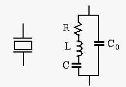

Next: About this document ... Up: midterm2_19s_key Previous: Instructions

Solution The total admittance is
 |
 is to pass the
fundamental frequency without attenuation but completely
block the 2nd harmonic
. Given , find
and .
is to pass the
fundamental frequency without attenuation but completely
block the 2nd harmonic
. Given , find
and .

Solution Find the total impedance of the filter branch:
 , ,
the filter is a short circuit. Therefore, to pass without
attenuation, needs to satisfy
, ,
the filter is a short circuit. Therefore, to pass without
attenuation, needs to satisfy
 , , ,
, , . The circuit is in steady state when
. Find current through when switch is closed at
.
, , ,
, , . The circuit is in steady state when
. Find current through when switch is closed at
.

Solution: Current through at is
Alternative method: , applying KCL to the middle point a: